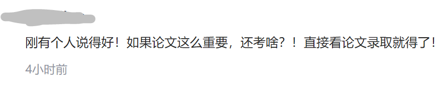

另一个维度的竞争
原创 V姐万事屋 V姐来了 2022-04-02 07:10
原文链接(长) 原文链接(短)
Hi, 我是V姐。
周六晚上8点直播，跟大家聊一聊一季度经济数据，还有经济会议的定调，点点预约不会错过哈：
这几天上海新增数据依然很多，尽管各种魔幻的事情层出不穷，31号那天还有一丝丝幻想，1号会不会解封呢？
结果一起来就收到居委送的食物，嗨，那就是没戏了，接着封。
前几天我们发了蔬菜水果和米油，这次发的东西很有趣：
粉丝，薏仁米，速溶蛋花汤，还有一盒曲奇饼干
蛋花汤配饼干，凑活凑活又一顿。
话说昨天有个新闻，是一个叫陈鑫的考研儿，本科济宁医学院，初试331分，英语47分，成功上岸北大协和医学院。
跟他竞争的另外一个同学，初试390，但是复试落榜。
网上一度传出陈鑫同学家庭背景过硬等谣言，最后济宁医学院跟协和双双官方盖章辟谣：
**陈鑫同学的录取完全符合规范！**
除了家庭背景一般之外，还透露他被录取，是因为本科就发了三篇SCI，其中一篇一作的，影响因子达到6.58。
不少做过科研的朋友，都能够理解一作SCI，影响因子6.58意味着什么，很多学校博士毕业，都发不出这个水平的文章。
因此从科研实力上说，陈鑫非常非常强，协和老师要他太正常了。
说句扎心的话，现在的考研战场，400+的考霸很多，发SCI的凤毛麟角。
而培养研究生的初衷是什么？
尤其是顶级大学的研究生，不是上课和考试机器啊，也不是混文凭躲就业的啊，是科研后备军，是致力于某一个领域的专精创新人才。
所以研究生的核心竞争力，应该是科研能力。
网上显然一堆人不这么觉得：

说挺好的，按照论文录取，按照科研实力录取。
国家是不想吗？
不是，是因为这么搞，普通人更没有机会了。
做科研，出成果，对于大部分天赋一般，学习环境一般，意志力一般的人来说，比考政治英语难多了。
考研英语100分又怎么样呢？
英语母语国家的人，又有多少发得出SCI呢？
脑子里觉得标准是这样，就应该按照这个来的人，都属于执行执傻了，连目的都忘了。
就好像某乎酸丁真为啥能进国企？李佳琦为啥能落户上海？谷爱凌有什么了不起？
我会读书有文凭能吃苦，居然比不上TA？
不好意思，比不上。
任何一个组织，要你就是你有价值。
文凭和分数不能说明你有价值，最多叫有潜力。
人家丁真的影响力是实打实可以给家乡带来热度，李佳琦一年给上海纳税九位数，谷爱凌就不说了，国家需要她的金牌和形象。
这是立刻可以交换的价值。
现货童叟无欺，你要不确定的期货干什么？
文凭和吃苦是大家都不能展现出现货价值的时候，用来给期货增加确定性的。
不要本末倒置了。
就好像我们以前冬季项目没人，只能从体操队、田径队选人过去练，如果有现成的谷爱凌，谁还费那劲呢？
难道你要说谷爱凌体操不是最强啊，她凭什么能上U型槽？
公司说招人要本科学历，但是现在有个人自带客户资源，老板分分钟抢人，根本不会在意学历。
该骂老板不守规矩还是关系户不要脸呢？
目的就是目的，目的是最高优先级，合适的手段为达到目的服务。
能达到目的的手段，就是好手段。
比如疫情下，秩序几乎失控时，是否完全有必要按照文明规则来？
前几天上海有一位市民，她爸爸突发疾病在家里耽搁时间过久去世。期间有120来到小区，是接另外一个病人，她和邻居想接AED除颤仪遭到拒绝。
这个120医生确实冷漠，在秩序几乎失控，资源挤兑严重的情况下，他这么做，是自保的最优选。否则借出后，如果之后的病人有个三长两短，他需要负全责。
此时病人家属最优的做法是什么呢？
是苦苦哀求借仪器吗？
不是的，因为这样会把所有责任推给医生。
此时要做的是叫上家里人，暴力抢夺车上的除颤仪。
这样就把责任揽到自己身上了，既有可能救下父亲，医生也不用担责。
上海另外一个父亲就做得很好，他的孩子突发疾病，他直接威胁不给出门单的居委，你们给不给，我现在都要开车撞开小区栏杆，强行出去。
这样，责任不在居委，也没人拦他了。
孩子最终转危为安。
我们不是鼓吹暴力，而是在讲行事逻辑要看到对方的核心诉求。
尤其这种人命关天，组织短暂运转失灵的时候，脑子里要抛开规则，发挥自己所有的主观能动性。
有的时候，按照规则卷是一个维度，看懂规则背后的核心诉求，是另一个维度。
看到的人，根本不跟上面人一个维度竞争。
狼对羊说，你们谁吃草吃得规范整齐，我就不吃谁。
所有羊都小心翼翼，比赛谁吃草吃得规范，精细地一根一根吃。只有个别羊意识到了，吃得整齐规范就意味着吃得慢，慢就吃得少，吃得少就会瘦，所以不会被吃掉。
那么少吃点的羊，不用一天花10小时啃出整齐的草坪，也能轻松赢得比赛。
而一天花10个小时啃草坪的，开始卷12小时，14个小时，从比拼整齐规范，再到比美观别致。
卷了一圈，狼对手下说，把那个最肥的带过来吃掉。
今晚直播欢迎来连麦，点点预约会有提醒哈：